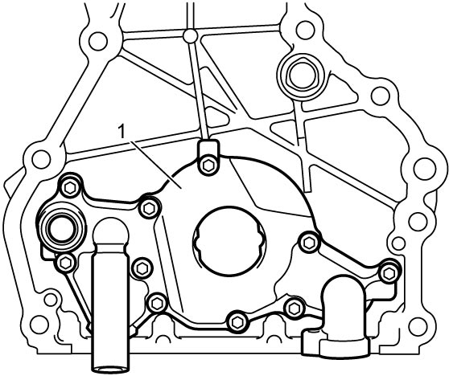
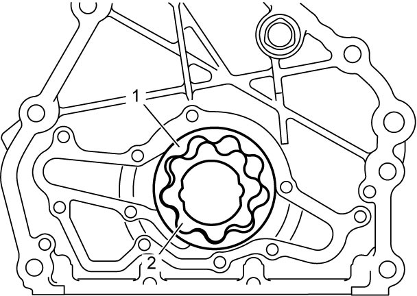
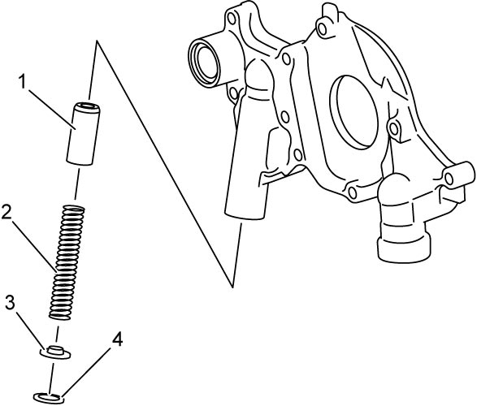

1E
| Oil Pump Assembly Disassembly and Reassembly |
Disassembly
1)Remove rotor plate (1) by removing rotor plate bolts.


 "Expand image")
2)Remove outer rotor (1) and inner rotor (2).

 "Expand image")
3)Remove relief valve (1), relief valve spring (2) and retainer (3) by removing circlip (4).

 "Expand image")
Reassembly
1)Clean and then dry all disassembled parts.
2)Apply thin coat of engine oil to inner and outer rotors, inside surfaces of timing chain cover and rotor plate.
3)Install outer rotor (1) and inner rotor (2) to timing chain cover.

NOTE:
When installing the outer rotor and inner rotor, face the front mark (3) toward cylinder block.
 "Expand image")
4)Apply engine oil to oil pump relief valve (1) and oil pump relief spring (2), and install them with relief valve retainer (3) and new circlip (4) to rotor plate.
 "Expand image")